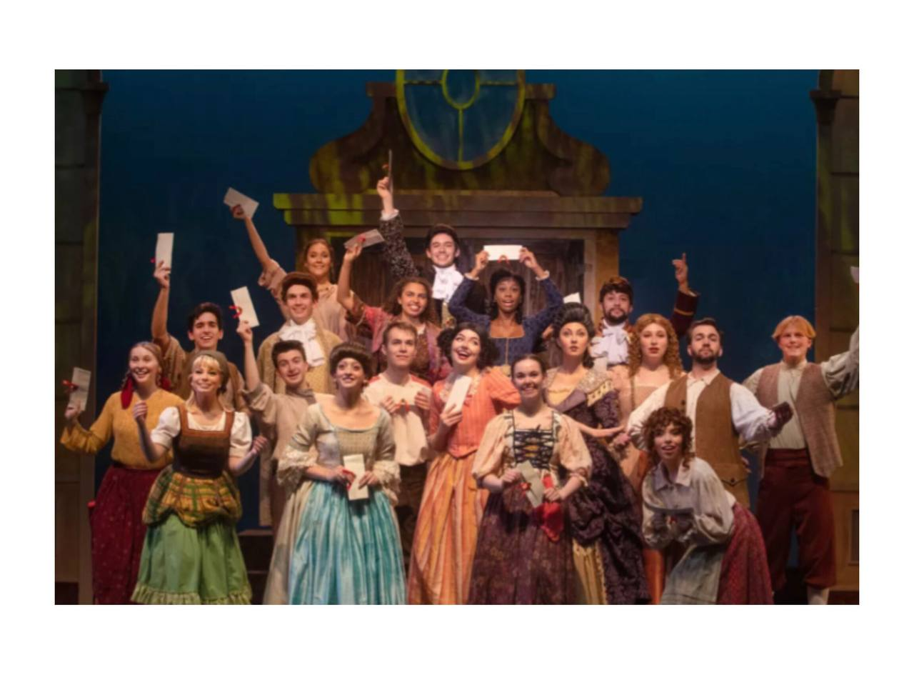

Home
Myself
Travel
Friends
Interest
Education
Home
Myself
Travel
Friends
Interest
Education
My Interest

×
1 / 4
2 / 4
3 / 4
3 / 4
❮
❯
A Journey Through the Arts: My Passion for Music, Dancing, Theatre, and Makeup
My life is a colorful quilt woven with the threads of music, dancing, theater, and cosmetics, from the pulsating pulses of a beloved song to the transforming magic of stage makeup. These hobbies not only make me very happy, but they also help to define who I am and how I see the world. This essay explores my love of these creative endeavors and how they have improved my quality of life.
The Melody of Music & My Favorite Song
Music has always been a central part of my life. From a young age, I was captivated by the power of melodies and lyrics to evoke emotions and tell stories. Whether I am playing an instrument, singing, or simply listening to my favorite tunes, music provides a constant source of comfort and inspiration.Through the universal language of music, which knows no boundaries, I have forged connections with individuals from a wide range of cultures and backgrounds. It has expanded my awareness of the human condition and opened my heart to fresh viewpoints.
Your browser does not support the audio element.
The Rhythm of Dancing
Another hobby of mine that gives me a great sense of freedom and joy is dancing. The rush I get from moving my body in time with the beat is amazing. I can connect with others, share stories, and communicate feelings via dance without using words.Every dance style, whether it be traditional, hip-hop, or modern, offers a different approach to express creativity and movement. I've learned the value of commitment, practice, and persistence via dancing. As I gain proficiency in new skills and give public performances, it has also assisted me in strengthening my resilience and confidence.
The Magic of Theatre
In the world of theater, imagination and reality coexist harmoniously. My passion for theater comes from its capacity to take viewers to new locations and eras, letting them immerse themselves in other people's lives and narratives. I enjoy taking on new roles as an actor and delving into the complexity of distinct personasI've learned empathy and teamwork from theater. Every production is a team endeavor that calls on the combined skills and commitment of the crew, designers, performers, and directors. It has been tremendously fulfilling to be a member of the theater community because it creates a sense of togetherness and purpose.
The Artistry of Makeup
Makeup is a kind of artistic expression that enables me to change and create, rather than just being a tool for enhancing attractiveness. I enjoy playing around with colors, textures, and makeup techniques for both simple everyday looks and extravagant stage appearances. Makeup may transform a character into something more in a play, give life to fantastical creatures, or just make someone feel more confident in everyday situations.Applying makeup is a creative and contemplative process. It calls for knowledge of color theory, facial traits, and the capacity to visualize the finished product. I've learned precision, inventiveness, and the value of attention to detail from makeup artists. It's a craft that blends artistic intuition with technical proficiency.